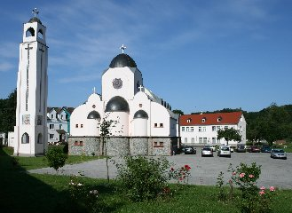

Kröffelbach
St. Antonius koptisch-orthodoxes Kloster
Kloster · Diözese Süddeutschland

Über die Gemeinde
Das Kloster St. Antonius wurde nach dem großen Hl. Antonius, dem Vater aller Mönche in der ganzen Welt und Stern der Wüste, benannt. Es befindet sich im Gebiet von Waldsolms am unteren Taunus. Ein Ort, umgeben von Tälern, Bergen und Wäldern, direkt am Ortsausgang von Kröffelbach gelegen. Es liegt etwa 13 km von Wetzlar, 18 km von Butzbach, 25 km von Gießen und etwa 60 km von Frankfurt. Ein schönes Grundstück, etwa 2 ha groß, inmitten des Solmsbachtales. Darauf wurden die Kirche und der Glockenturm gebaut. Es ist ein Haus des Gebetes und der Meditation und bietet eine Herberge für die Mönche. Auch gibt es ein Gästehaus mit großem Saal für die Agape.In der Ära von Papst Shenouda III. erlebte das Mönchtum eine Blütezeit und Koptische Klöster gründeten sich in der ganzen Welt. Der verstorbene Vater Salib Sourial, den Seine Heiligkeit Papst Schenouda III. zum Dienst im Jahr 1975 nach Deutschland bestellt hatte, sowie der verstorbene Anba Samuel, Bischof für allgemeine und soziale Angelegenheiten, haben sich grosse Verdienste durch ihre Bemühungen beim Kauf des Klosters erworben.
Das Kloster wurde im Jahre 1980 gekauft und wurde am 31. März 1980 als Kloster übernommen. In den ersten Jahren gab es noch keine Kirche, weshalb man für die liturgischen Dienste in ein Zimmer des 2. Stockwerkes ausweichen mußte. Die erste Liturgie fand am 07. April 1980 statt. Später wurde dann der liturgische Raum in einem anderen Zimmer des Stockwerkes verlegt, bis der Bau der neuen Kirche abgeschlossen war.
Das Koptische Kloster wird nicht nur von Koptischen Christen aus der Umgebung besucht, sondern auch von vielen Angehörigen der verschiedensten Konfessionen in Nah und Fern. Besonderer Anziehungspunkt bilden die Seminarveranstaltungen des Koptischen Zentrums, die von jedermann besucht werden können. Besuchen Sie auch unsere Photgaliere, die Ikonen, Mosaiken und Bilder des Klosters enthält:Übersicht der Photogalerie
Infos
Übernachtungen — wichtige Hinweise
Gemäß den deutschen Gesetzen zur Übernachtung und den Anweisungen des Klosters ist eine Übernachtung im Kloster nur mit einem der folgenden Dokumente gestattet:
- Ein gültiger Personalausweis oder Reisepass oder
- Eine gültige Aufenthaltserlaubnis für Deutschland, die mindestens für die Dauer der Übernachtung im Kloster gültig ist.
Dies gilt für alle Betroffenen, ob Familien (einschließlich Kinder jeden Alters) oder Einzelpersonen.
Eine Kopie des zur Reservierung vorgelegten Dokuments wird zu Archivzwecken im Reservierungsbüro des Klosters angefertigt.
20.11.2025
Anba Deuscoros
Bischof der koptisch-orthodoxen Diözese Süddeutschland und Abt des St. Antonius Klosters
Sommerferien 2026 — Öffnung der Übernachtungsräume
Zum Auftakt der Sommerferien in Europa öffnet das St. Antonius Kloster in Kröffelbach seine Übernachtungsräume täglich vom 1. Juni bis 31. August für junge Männer und Familien.
Für eine Übernachtung wird eines der folgenden Dokumente benötigt:
- Ein gültiger Personalausweis oder Reisepass oder
- Eine gültige Aufenthaltserlaubnis für Deutschland, die mindestens für die Dauer der Übernachtung im Kloster gültig ist.
Eine Reservierung ist erforderlich.
Bitte kontaktieren Sie uns per WhatsApp unter: +49 155 63241084
15.05.2026
Anba Deuscoros
Bischof der koptisch-orthodoxen Diözese Süddeutschland und Abt des St. Antonius Klosters
Adresse & Ansprechpartner
Bischof
Seine Exzellenz Bischof Anba Deuscoros
Bischof von Süd-Deutschland
Gottesdienstzeiten
- Jeden Abend Agpeya-Gebete um 17:00 Uhr
- Jeden Samstag: Abendweihrauchopfer 17:00
- Samstags und Sonntags: Gottesdienste 08:00 bis ca. 10:30 Uhr
- Liturgie in den Fastenzeiten Mittwochs und Freitags von 10:00 bis 12:00 Uhr
- Liturgie in den NICHT Fastenzeiten Mittwochs und Freitags von 10:00 bis 12:00 Uhr
Bitte beachten Sie, dass sich die Zeiten in Fasten- und Festzeiten ändern können. Bitte kontaktieren Sie die Gemeinde für aktuelle Informationen.
Diakone
- Diakonen-Chor tritt in Fülle jeden Sonntag auf
Bankverbindung
| Kontoinhaber | Koptisches Kloster Kröffelbach |
| Bank | Volksbank Brandoberndorf |
| IBAN | DE04 5159 1300 0050 1015 09 |
| BIC | GENODE51WBO |
DKB — Digitale Koptische Bibliothek
Eine wachsende Sammlung koptischer Schriften, Liturgien und Lebensgeschichten zum Download.
Insgesamt: 180 Dateien · 7 Kategorien
Liturgie 52 Dateien
- 00 Liturgiebuecher liste ueberblick 439 KB
- 01 LiturgiebuecherDas heilige euchologion 12.6 MB
- 01 Euchologion Allgemeine Infos 239 KB
- 01b Euchologion Jugend mit Umschrift 3 Liturgien 15.9 MB
- 01c LiturgiebuecherDas heilige messbuch · Euchologion · Basilius liturgie mit umschriften 15.9 MB
- 01d LiturgiebuecherDas heilige euchologion · Kurze fassung 6.0 MB
- 01dd LiturgiebuecherDas heilige euchologion · Kurze fassung · Druckversion 5.0 MB
- 01e LiturgiebuecherDas heilige messbuch · Euchologion · Literaturverzeichnis - vorwort und glossar 2.6 MB
- 01f Liturgiebuecher PPT vesper 2.4 MB
- 01g Liturgiebuecher kinder euchologion 18.8 MB
- 01h Liturgiebuecher version 30 PPT das heilige messbuch euchologion 11.2 MB
- 02b Liturgiebuecher agpeya septuaginta das koptische stundengebetsbuch 2.8 MB
- 02c Liturgiebuecher agpeya einheitsuebersetzung das koptische stundengebetsbuch 2.7 MB
- 02d Liturgiebuecher agpeya einheitsuebersetzung powerpoint 2.4 MB
- 02e LiturgiebuecherAgpeya veraenderte woerter 360 KB
- 03 LiturgiebuecherDie jaehrliche heilige psalmodie 10.5 MB
- 03a Die jaehrliche psalmodie coptic dictionary of the theological words of the coptic psalmody 2.1 MB
- 03b LiturgiebuecherDie jaehrliche heilige psalmodie · Vollstaendige version mit umschriften 18.2 MB
- 03c LiturgiebuecherDie jaehrliche heilige psalmodie · Gedruckte version fuer die jugend · Mit umschriften 14.5 MB
- 03d LiturgiebuecherDie jaehrliche heilige psalmodie - kurze version mit nur samstags und sonntags mitternachtsgebeten 5.8 MB
- 03e Koptische psalmodie online freigabe und veroeffentlichung 1010 KB
- 03f LiturgiebuecherDie jaehrliche heilige psalmodie - tasbeha 6.8 MB
- 05 Liturgiebuecher die sieben sakramente in der koptischen kirche 10.3 MB
- 05a Liturgiebuecher drei der sieben sakramente in der koptischen kirche 4.3 MB
- 05b Liturgiebuecher theologische bedeutung und liturgische ausfuehrung der sieben sakramente 2.2 MB
- 05d Liturgiebuecher sakramente 6.eheschliessung powerpoint 1.6 MB
- 06 LiturgiebuecherSynaxarium teil 1 11.1 MB
- 07 LiturgiebuecherSynaxarium teil 2 2.1 MB
- 08d LiturgiebuecherKoojak psalmodie v2.3 8.8 MB
- 10 LiturgiebuecherLobgesaenge an die heiligen-tamagied 4.0 MB
- 11g Liturgiebuecher sonntagsschullieder 882 KB
- 14 Liturgiebuecher die weihungen in der koptisch-orthodoxen kirche 11.5 MB
- 17 Katameros Teil 1 Lesungen an Sonntagen des Kirchenjahres v2 2017 2.3 MB
- 17b Katameros Anpassungen am Altgriechischen Original v2 2017 733 KB
- 18 Katameros Teil 2 Lesungen der Wochentage der ersten koptischen Jahreshaelfte v2 2017 2.1 MB
- 19 Katameros Teil 3 Lesungen der Wochentage der zweiten koptischen Jahreshaelfte v2 2017 1.8 MB
- 20 Katameros Teil 4 Liturgielesungen der grossen Fastenzeit v2 2017 3.0 MB
- 21 Katameros Teil 5 Lesungen von Ostern bis Pfingsten v2 2017 1.8 MB
- 22a Pascha PPT die heilige karwoche 521 KB
- 22b Pascha PPT karwoche palmsonntag 1.8 MB
- 22c Pascha PPT karwoche montagvorabend 1.9 MB
- 22d Pascha PPT karwoche montag 2.0 MB
- 22e Pascha PPT karwoche dienstagvorabend 2.1 MB
- 22f Pascha PPT karwoche dienstag 2.2 MB
- 22g Pascha PPT karwoche mittwochvorabend 2.1 MB
- 22h Pascha PPT karwoche mittwoch 1.9 MB
- 22i Pascha PPT karwoche donnerstagvorabend 2.1 MB
- 23a Pascha PPT karwoche gruendonnerstag 2.2 MB
- 23b Pascha PPT karwoche freitagvorabend - erlaeuterungen am ende 2.5 MB
- 23c Pascha PPT karwoche karfreitag 20.2 MB
- 24a Liturgiebuecher PPT lichtsamstag 3.9 MB
- 24b Liturgiebuecher PPT osterliturgie 4.2 MB
Lebensgeschichten der Heiligen 12 Dateien
- 00 Liste der lebensgeschichten der heiligen 443 KB
- 01 Die heilige jungfrau maria - die gottesmutter ti-theo-tokos - bei den kirchenvaetern 1.8 MB
- 02 Der augenzeuge gottes abba markus der apostel evangelist und maertyrer 2.5 MB
- 05 St.mina der wundertäter 1.2 MB
- 06 Die koptische herkunft der thebaeischen legion 1.9 MB
- 10 Vita antonii 1.7 MB
- 11 Vita pauli 2.7 MB
- 13 Vita pachomii 2.0 MB
- 14 Abu fana 7.8 MB
- 17 Papst kyrillus VI und die geistliche fuehrung v2-f.ibrahim 1.9 MB
- 17 Papst kyrillus VI und die geistliche fuehrung 2.2 MB
- 18 Abba abraam bischof von faijum 1.3 MB
Papst Schenouda III 14 Dateien
- 00 Der deutschlandbesuch seiner heiligkeit papst schenouda III vom 15.11.-22.11.1990 3.1 MB
- 00 Lebenslauf 19 KB
- 01 Befreiung der seele 1.5 MB
- 02 Betrachtungen ueber die auferstehung 1.7 MB
- 03 Betrachtungen ueber die bergpredigt 1.6 MB
- 04 Betrachtungen ueber die karwoche 1.5 MB
- 05 Betrachtungen ueber die geburt des herrn 1.2 MB
- 06 Das geistige wachen 1.3 MB
- 09 Der augenzeuge gottes abba markus der apostel evangelist und maertyrer 2.6 MB
- 17 Die offenbarung der geburt christi 1.1 MB
- 29 Natur christi 1.0 MB
- 30 Natur christiVersion 2 1.1 MB
- 34 Wie wir ein neues jahr beginnen 1.3 MB
- 40 Zeugen jehovas 1.6 MB
Jugend 24 Dateien
- 0 2019 St.Markus Festival - Mahragan El-Keraza 935 KB
- 00 Sonntagsschule Unterricht 3-6 Jahre Manhag 1.6 MB
- 01 Bibel-Quiz 26 KB
- 01 Liturgiebuecher Kinder Euchologion 18.8 MB
- 02 Brief vom Papst Kyrillos VI an die Jugend 97 KB
- 03 Paedagogik und Erziehung Jesu Christi 219 KB
- 04 Prospekt jugendbegegnung2 650 KB
- 05 Wettbewerb koptisch 641 KB
- 06 Nairuz Quiz 2010 188 KB
- 10 Koptischer Wettbewerb 2015 263 KB
- 12 2022 St.Markus Festival - Fragen der zweiten Schulklasse 544 KB
- 13 2022 St.Markus Festival - Sketch der zweiten Schulklasse ueber die Bibelbuecher des Neuen Testaments 948 KB
- 2022 Oktober Dienertreffen in Kroeffelbach - Vortrag Argumente Weltentstehung 1.2 MB
- 2022 Oktober Dienertreffen in Kroeffelbach - Vortrag Evolution 2.0 MB
- 2022 Oktober Dienertreffen in Kroeffelbach - Vortrag god of old testament 995 KB
- 2022 Oktober Dienertreffen in Kroeffelbach - Vortrag How to speak with this generation 670 KB
- 2022 Oktober Dienertreffen in Kroeffelbach - Vortrag S. Reinheit 1.6 MB
- 2022 St.Markus Festival 1 2 Klasse komplett 422 KB
- 2022 St.Markus Festival 3 4 Klasse komplett 458 KB
- 2022 St.Markus Festival 5 6 Klasse komplett 505 KB
- 2022 St.Markus Festival MittelstufeDeutsch komplett 633 KB
- 2022 St.Markus Festival MittelstufeZusammenfassungen aller Lektionen · Arabisch 494 KB
- 2022 St.Markus Festival Samuel 1 440 KB
- 2023.St.Markus Festival Hymnus - Motto 767 KB
Schriften der koptischen Kirchenväter 8 Dateien
- 01 Papst Alexanderus I. Zwei Schriften 112 KB
- 02 Papst Athanasius I. 34 Schriften 8.5 MB
- 03 Gelehrte Clemens von Alexandrien Vier Schriften 5.5 MB
- 04 Papst Kyrillus I. Sieben Schriften 3.1 MB
- 05 Die griechische Liturgie des heiligen Markus 400 KB
- 06 Die griechische Liturgie des heiligen Basilius 356 KB
- 07 Messe der sog. Aegyptischen Kirchenordnung sa.ec. II-III 181 KB
- 08 Bostan Er-Rohban Palladius von Helenopolis- Leben der Vaeter Historia Lausiaca 671 KB
Verschiedene Bücher 25 Dateien
- 00 Koptischer kalender 118 KB
- 01 A. Koptisch-Orthodoxe-Gemeinden-Deutschland 5.7 MB
- 01 B. Koptisch-Orthodoxe-Gemeinden-Dioezese-Nord-Deutschland 1.6 MB
- 01 C. Koptisch-Orthodoxe-Gemeinden-Dioezese-Sued-Deutschland 4.7 MB
- 02 Koptische webseiten weltweit 360 KB
- 03 Seminar- vortraege teil 1- ueber die koptische liturgie 2.6 MB
- 04 Seminar- vortraege teil 2- ueber die koptische kirche 571 KB
- 05a Flyer PPT koptisch-orthodoxe kirche stand 01.09.2016 4.7 MB
- 05b Flyer koptische kirche stand 01.09.2016 728 KB
- 06 Was ist die koptisch-orthodoxe kirche von alexandrien 155 KB
- 07 Die koptisch-orthodoxe kirche 253 KB
- 08 Der koptisch-orthodoxe glaube 189 KB
- 09 Aegypten in der bibel 190 KB
- 10 Christologie gemaess dem verstaendnis der nicht-chalcedonischen orthodoxen kirchen 260 KB
- 11 Sammlung von heiligen in der koptischen kirche 215 KB
- 12 Die greueltaten in armenien 155 KB
- 13 Eine botschaft aus dem himmel 114 KB
- 14 Im blick- koptische jugendzeitschrift 6.8 MB
- 15 Geschichte der kopten in deutschland nach dem 2. weltkrieg 777 KB
- 16 Bohairic - english dictionary 1.3 MB
- 17 Kroeffelbach-theologische fakultaet-bedingungen fuer die teilnahme 155 KB
- 18 Kroeffelbach-theologische fakultaet-studienfaecher 155 KB
- 19 Kroeffelbach-theologische fakultaet-anmeldungsformular 482 KB
- 20 Kroeffelbach-theologische fakultaet-20 jaehriges jubilaeum 1.4 MB
- 21 Beweise dass die christliche theologie nicht von der altägyptischen theologie abgeleitet ist 1.4 MB
St. Markus Zeitschrift 45 Dateien
- 2008-1 2.4 MB
- 2008-2 5.8 MB
- 2009-1 4.8 MB
- 2009-2 4.8 MB
- 2010-1 11.8 MB
- 2010-2 5.0 MB
- 2011-1 4.7 MB
- 2011-2 10.9 MB
- 2012-1 4.8 MB
- 2013-1 3.9 MB
- 2013-2 10.2 MB
- 2014-1 4.7 MB
- 2014-2 7.2 MB
- 2015-1 14.1 MB
- 2015-2 10.2 MB
- 2016-1 5.4 MB
- 2016-2 7.9 MB
- 2017-1 6.6 MB
- 2017-2 3.8 MB
- 2018-1 5.8 MB
- 2018-2 5.0 MB
- 2019-1 4.4 MB
- 2019-2 6.6 MB
- 2020-1 5.7 MB
- 2021-1AR 2.5 MB
- 2021-2DE 2.8 MB
- 2022-1AR 6.2 MB
- 2022-1DE 6.2 MB
- 2022-2AR 4.9 MB
- 2022-2DE 5.2 MB
- 2023 Anba Michael 1 SonderheftAR 7.7 MB
- 2023 Anba Michael 1 SonderheftDE 10.2 MB
- 2023 Anba Michael 2 SonderheftAR 6.1 MB
- 2023 Anba Michael 2 SonderheftDE 6.5 MB
- 2023 Anba Michael 2 SonderheftEN 6.5 MB
- 2023-1AR 4.7 MB
- 2023-1DE 4.8 MB
- 2023-2AR 4.7 MB
- 2023-2DE 4.7 MB
- 2024 Anba Michael 3 SonderheftAR 7.0 MB
- 2024 Anba Michael 3 SonderheftDE 3.3 MB
- 2026-1AR 5.0 MB
- 2026-1DE 5.5 MB
- 2026-2AR 2.6 MB
- 2026-2DE 2.5 MB